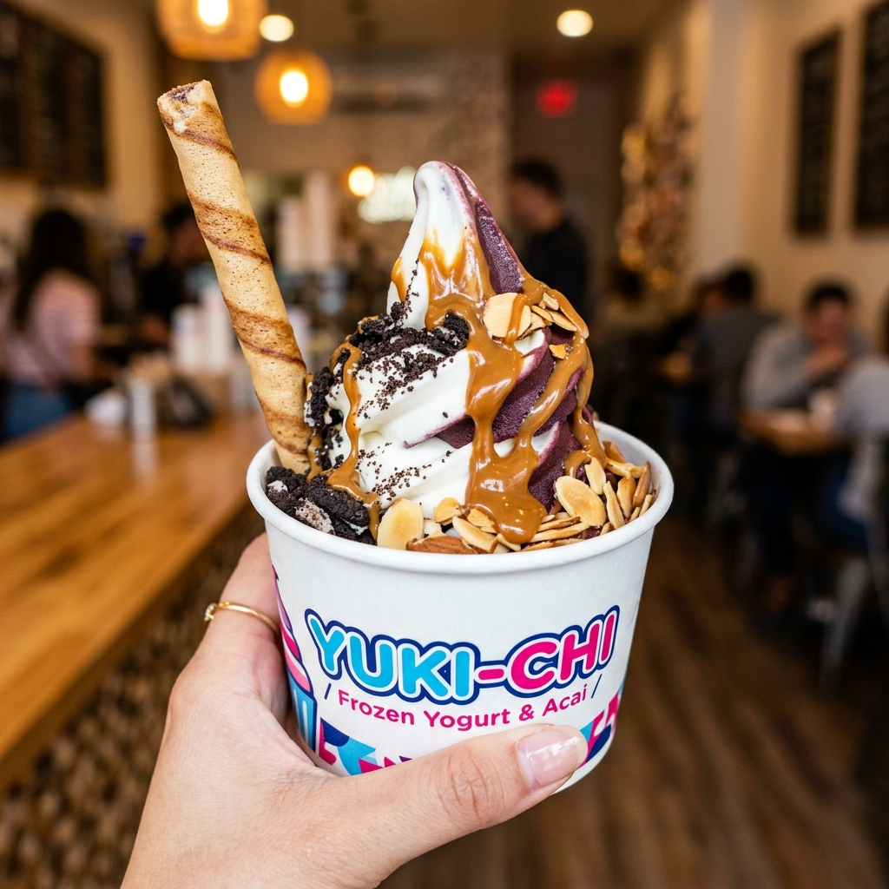
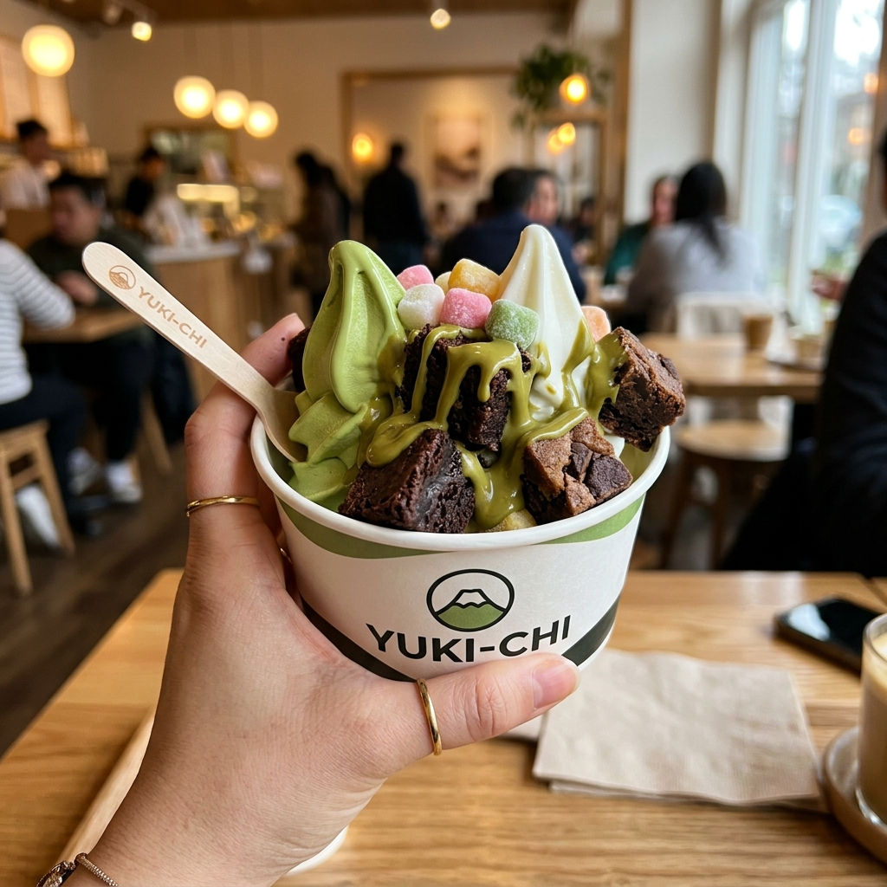
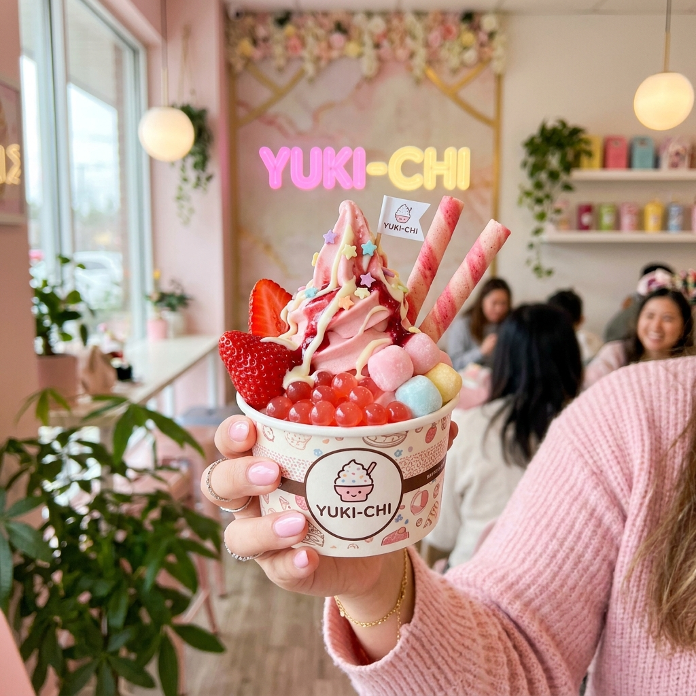
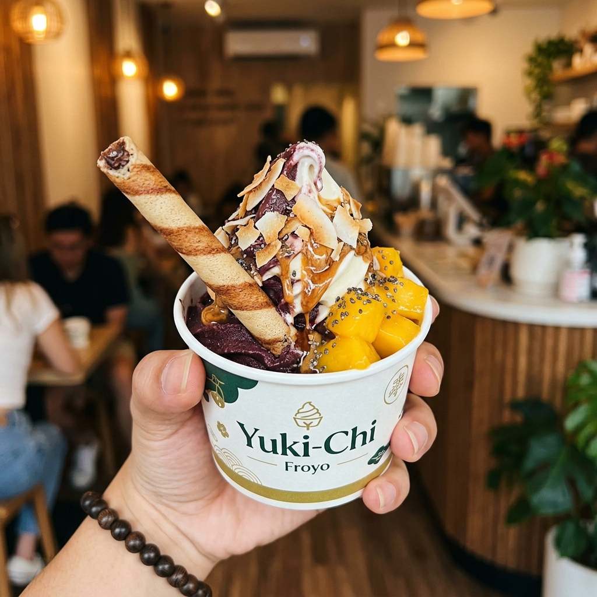

Photogenic, high-margin, custom creations crafted by customers at the Yuki-Chi self-serve bar.

DUAL SWIRL CLASSICHalf organic Acai sorbet and half creamy Tart froyo, paired with a crispy Love Letter wafer roll, crushed Oreos, roasted almonds, and warm melted Biscoff sauce.

BAKERY & MATCHAUji Matcha and Tart froyo generously loaded with chopped chocolate fudge brownies, chocolate chunk cookie cake cubes, mini mochis, and 100% pure warm Italian pistachio drizzle.

KAWAII PASTELStrawberry Lychee and Tart froyo topped with fresh Da Lat strawberries, strawberry popping pearls, pastel mini mochis, pink wafer rolls, and ruby coulis drizzle.

TROPICAL SUPERFOODPure organic Acai sorbet with Tart Greek yogurt, topped with ripe mango compote cubes, toasted coconut chips, crispy Love Letter wafer roll, chia seeds, and raw blossom honey.